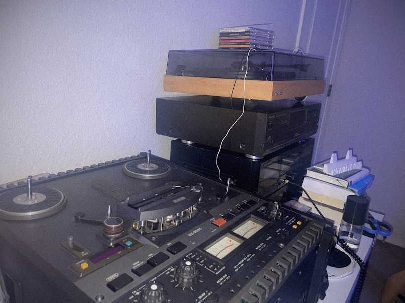

cameronos
cameronos
A full-stack developer & cybersecurity major based in Fort Collins, Colorado.
I typically work on video game modifications, or my own operating system CameronOS. I enjoy using a set of different programming languages.
Programming language skillset
Audiophile
I have a large collection of records , and am heavily invested in reel-to-reel recording technology.

My setup is as follows:- * Fluance RT-83 (w/ Ortofon 2M Red)
* Pioneer CT-W500
* Otari MX5050 BII
* Sony STR-DH190
* Audio-Technica MH50X
I am also currently repairing:-
* Sony TC-399
* Realistic 999
* Pioneer CT-W500
* Otari MX5050 BII
* Sony STR-DH190
* Audio-Technica MH50X
I am also currently repairing:-
* Sony TC-399
* Realistic 999